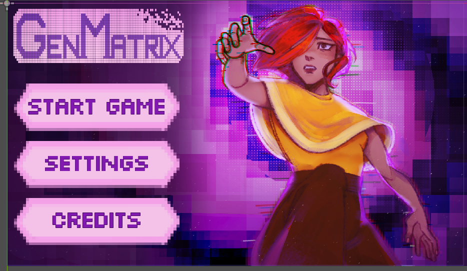
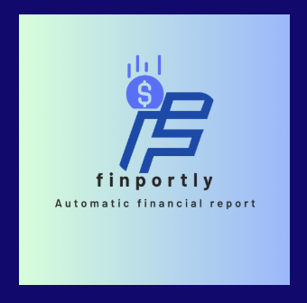
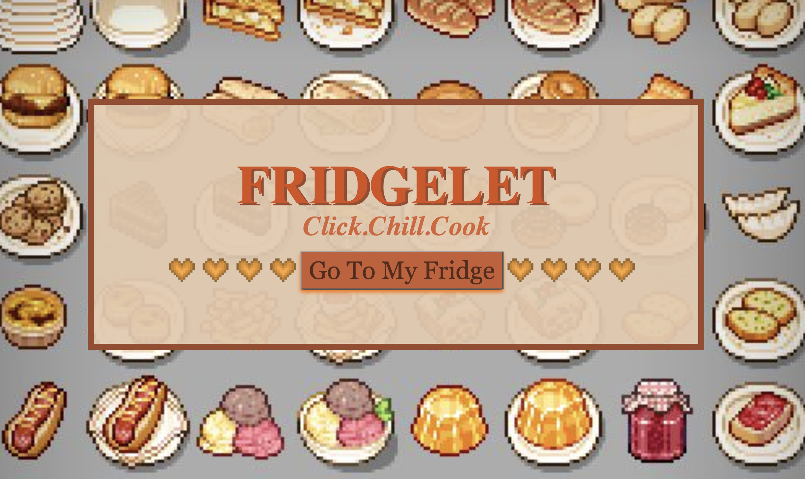

2023 - now
Online Translation Team Manager
Self-employed ✦ Chinese ✦ Vietnamese
Coordinate roughly 40 translators across recruiting, assignments, deadlines, editing, quality control, team communication, and monthly payments.
Student developer ✦ Atlanta, GA
I'm An, a high school developer exploring cybersecurity, game development, AI, fintech, and the small details that make technology easier to understand.
currently working on
I'm learning Godot 3D while building a cybersecurity game for people who aren't super technical.
this week: making the USB scenario actually work without breaking everything else:D
01 / Selected work
I like building where technology meets a real person: a student learning AI, a family thinking about money, or someone trying not to click the wrong QR code.

Featured ✦ Godot ✦ Education
A multi-level 2D platformer that teaches younger players about responsible AI use and online safety through play instead of a lecture.

03Web Development ✦ Financial Literacy
A personal finance tool that turns user-provided information into clearer, easier-to-understand financial reports.

04JavaScript ✦ Illustration ✦ Audio
An interactive digital refrigerator where users open the fridge, discover dishes, and listen to recipe readings.
02 / About me
I started learning code in Vietnam, then kept building after moving to Georgia. The environments changed. The habit did not: I see something interesting, ask "wait, how does that work?", and try to make my own version.
That habit has taken me from HTML experiments to game development, AI, cybersecurity, fintech, hardware, and hackathons. I especially enjoy projects that turn intimidating ideas into something visual, interactive, or easier to understand.
Outside of programming, I manage a Chinese-to-Vietnamese translation team, create Vietnamese-language videos, and support computer science students as a teaching assistant. Those experiences shape how I build: communication matters just as much as the code.
03 / Experience
A few places where I have built things, organized people, and helped make technology more approachable.
Self-employed ✦ Chinese ✦ Vietnamese
Coordinate roughly 40 translators across recruiting, assignments, deadlines, editing, quality control, team communication, and monthly payments.
Rock The Street, Wall Street ✦ Northview Cohort
Serve as a liaison among students, mentors, educators, and program leaders, helping strengthen participation and engagement in financial education.
Hack Club Athena ✦ Atlanta Tech Village
Co-organized a free technology hackathon for girls ages 13-18, supporting outreach, sponsors, activities, and participant experience.
Northview High School ✦ Work-Based Learning
Support students with binary, Boolean logic, ASCII, problem solving, and introductory programming while helping create a calmer place to ask questions.
Northview High School
Coordinate club communications, meetings, events, and opportunities while collaborating with officers and faculty sponsors.
04 / CS-related recognition
Recognition from projects, competitions, and communities that pushed me to keep building.
NCWIT ASPIRATIONS IN COMPUTING
Also selected as a Georgia Affiliate Winner.
STUDENT TECHNOLOGY COMPETITION
Game Design at the Fulton County and Georgia state technology competitions for GenMatrix.
MIT AI & EDUCATION SUMMIT
Presented GenMatrix and its approach to responsible AI and cybersecurity education.
HACKATHONS + INNOVATION
Recognized through Georgia State AILP3 and the Greencode Hackathon.
05 / Contact
I'm always excited about software, cybersecurity, game development, hackathons, and projects where I can learn by actually building something.